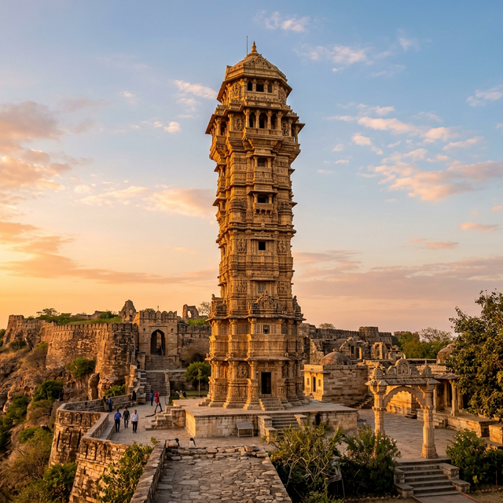
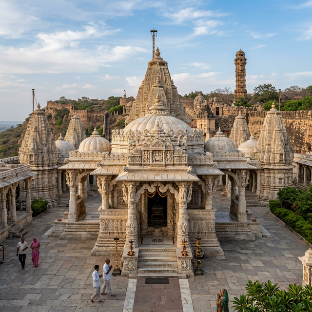

1. कीर्ति स्तंभ (Tower of Fame)

22 मीटर ऊँचा यह 12वीं शताब्दी का स्मारक प्रथम तीर्थंकर भगवान आदिनाथ को समर्पित है। एक धनी जैन व्यापारी, जीजाजी बघेरवाला द्वारा निर्मित, यह स्तंभ सोलंकी वास्तुकला का एक अद्भुत नमूना है। इसकी सतह के हर इंच पर तीर्थंकरों और दिव्य प्राणियों की जटिल नक्काशी की गई है।
2. सातबीस देवरी मंदिर

किले में सबसे बड़ा जैन मंदिर परिसर, मुख्य गर्भगृह के चारों ओर स्थित 27 सहायक मंदिरों के नाम पर "सातबीस" (सात और बीस) कहा जाता है। मूल रूप से 15वीं शताब्दी में निर्मित, इसमें उत्कृष्ट संगमरमर की नक्काशी और एक शांत वातावरण है जो ध्यान और प्रार्थना के लिए उपयुक्त है।
यात्री सुझाव: ट्रेल का अनुभव करने का सबसे अच्छा समय सूर्योदय या सूर्यास्त है, जब सुनहरी रोशनी प्राचीन संगमरमर को रोशन करती है, जिससे नक्काशी जीवंत हो उठती है।